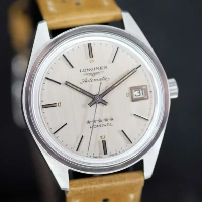
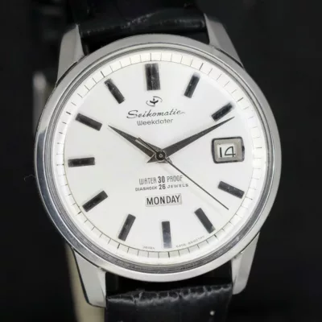

Explore our collection of hand-selected timepieces from the 1950s to the 1980s. Each watch is meticulously inspected, cleaned, regulated and offered with our 1-year workshop warranty.
Real timepieces currently in our inventory or recently curated. Each piece is unique.





Founded by David Broglin (Le Vingtième Siècle), Watch & Vintage is dedicated to reviving exceptional vintage timepieces from the golden era of watchmaking — the 1950s through the 1980s.
Every watch acquired passes through comprehensive inspection: movements are disassembled, cleaned, relubricated, regulated on timegraphers, and tested for amplitude. Crystals and bands are carefully replaced when appropriate, preserving original dials and authentic patinas.